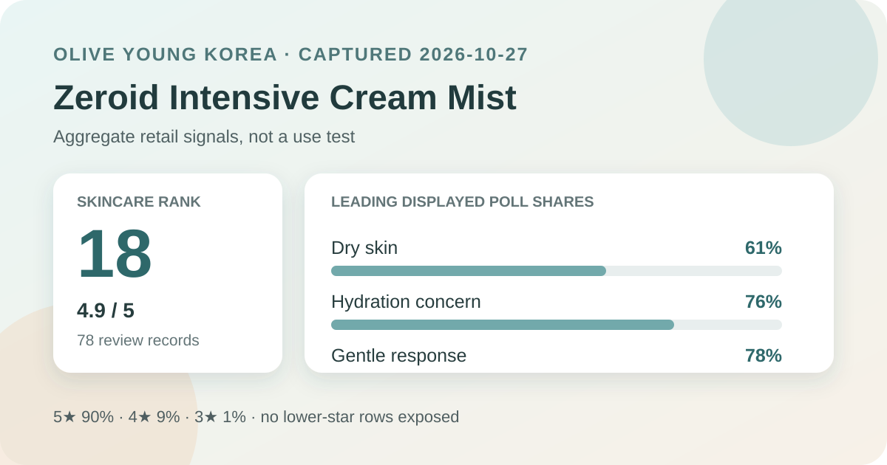
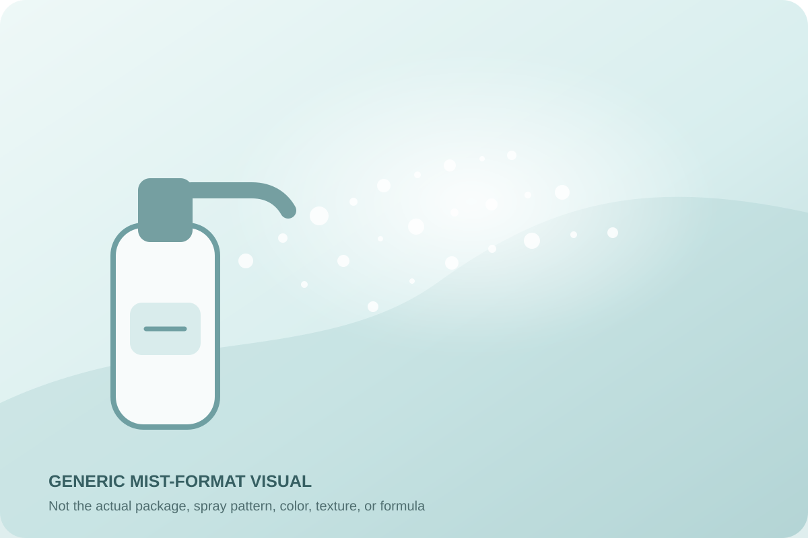

Data captured October 27, 2026. This analysis uses only Olive Young Korea's displayed aggregate rating, exposed star rows, and anonymous shopper polls. It does not reproduce or translate individual review text, names, or photos.

The short version: The listing showed 4.9 out of 5 from 78 review records. The exposed distribution assigned 90% to five stars, while dry skin, hydration concern, and the gentle response led their respective polls. The base is small enough that every interpretation should remain cautious.
The visible average was 4.9 stars. The product header displayed 78 review records, and the official detailed statistics repeated both the 4.9 score and the 78-record total. That agreement matters: it reduces the risk of joining a storefront title to a different product's review block. It does not prove that every record describes the exact package, promotion, or formulation visible on the capture date.
The detailed statistics exposed these rounded rows:
No two-star or one-star row appeared in the returned distribution. I have therefore not converted that absence into a claimed zero. The three exposed rows total 100% after whole-number rounding. They show that five-star selections dominated the visible distribution, but they do not reveal exact counts per row or the reasons behind any rating.
With 78 records, the aggregate is more sensitive to new submissions than a listing with thousands of reviews. Retail ratings are also shaped by self-selection, promotions, expectations, routine differences, packaging changes, and how soon after purchase people respond. A high average is a useful satisfaction signal, not an efficacy measurement.
The displayed skin-type poll showed 61% dry, 33% combination, and 6% oily. Dry skin was the largest response group by 28 percentage points over combination skin. This tells us who was most represented among people answering that poll; it does not show that dry skin achieved a larger or better outcome.
Self-reported skin type can change with climate, season, cleansing, medication, and the rest of a routine. The interface did not supply controlled results split by skin type. Someone with oily skin is not ruled out by a 6% share, and someone with dry skin is not guaranteed a good fit by the 61% share.
The concern poll displayed 76% hydration, 20% soothing, and 5% wrinkle or brightening concern. Those rounded rows total 101%. The large hydration share is consistent with the way shoppers may approach a product called an intensive cream mist, but it remains a concern label rather than a before-and-after result.
No corneometry, transepidermal water-loss reading, barrier-recovery measure, redness assessment, wrinkle measurement, comparator, or defined treatment period was captured. The retailer category and product name cannot establish how much moisture the product adds, how long any effect lasts, or whether it repairs a compromised barrier. The supported statement is simply that hydration was the dominant displayed shopper concern.
The irritation poll showed 78% gentle, 17% ordinary, and 5% felt irritation. Gentle was the leading response, yet more than one in five displayed responses fell outside that lane. This is not a safety rate: response labels are subjective, the denominator for the poll is not presented as a randomized population, and the data cannot predict one person's tolerance.
A facial mist may be used more often or layered differently from a conventional cream. Spray distance, number of passes, contact with the eye area, the products beneath it, and environmental conditions may all matter. The current regional label should determine directions and precautions. Any discomfort is a reason to stop rather than to let an aggregate score overrule an individual response.
The retailer's summary endpoint returned no topic titles or descriptions and no usable positive or negative classification for this product at capture. That is an important absence. I have not substituted themes from individual reviews, inferred topics from reviewer photos, or borrowed a summary from another Zeroid product.
The article therefore stays with the evidence the source did expose: the matched 4.9 average, 78-record count, three visible star rows, and three poll groups. A sparse summary surface is not evidence that reviewers agreed on nothing; it simply means there was no retailer-level theme aggregate suitable for use here.

The retailer categorizes the product as a mist and uses “cream mist” in the title. In general retail language, a facial mist is a sprayable leave-on format, while “cream” may suggest a richer positioning than plain water. Those labels do not define droplet size, emulsion structure, oil content, occlusivity, finish, or performance.
I did not handle or apply this product. The illustration above is intentionally generic and should not be read as a reconstruction of the real spray, liquid color, viscosity, scent, settling time, tack, residue, or makeup compatibility. It also says nothing about whether the bottle needs shaking. The current package directions should decide distance, amount, frequency, eye-area precautions, and whether the product belongs before or after other steps.
At capture, the Korean page showed a ₩23,000 reference price and a ₩17,500 displayed sale price for 100 ml. It also showed a reservation-shipping notice beginning November 1. Prices, inventory, gifts, coupons, delivery timing, and regional availability can change, so these details are a dated storefront anchor rather than a durable value judgment.
The linked review records may span different promotions, dates, or packaging conditions. Before comparing value, verify the current seller, included volume, package directions, return terms, and shipping status. The review total alone cannot prove that every record was submitted under the same price or fulfillment arrangement shown on October 27.
The narrow, defensible reading is that Zeroid Intensive Cream Mist was the first valid unpublished candidate after 17 higher-ranked listings matched products or product families already covered here. It held skincare sales rank 18; its header and official review statistics agreed on 4.9 stars across 78 records; five-star ratings made up 90% of the exposed distribution; dry skin led the skin-type poll; hydration led the concern poll; and 78% selected the gentle response.
The main caution is dataset size. Seventy-eight records can offer an early retail signal, but the average and polls can move more visibly as new responses arrive. The page also offered no usable anonymous theme summary and no controlled outcome measures. Treat the result as a compact map of shopper responses, then verify the current label and decide according to your own routine and tolerance.
Method note: Numbers are transcribed from the live Olive Young Korea aggregate display and official review-statistics response on the capture date. Percentages are reported as displayed and are not converted into estimated respondent counts. Individual review text, reviewer names, and review or product photographs were not copied, translated, or analyzed.
Source: Olive Young Korea product listing. Accessed October 27, 2026. Source values can change after capture.
← All reviews · Rankings · Skin-poll representation · Methodology & disclosure